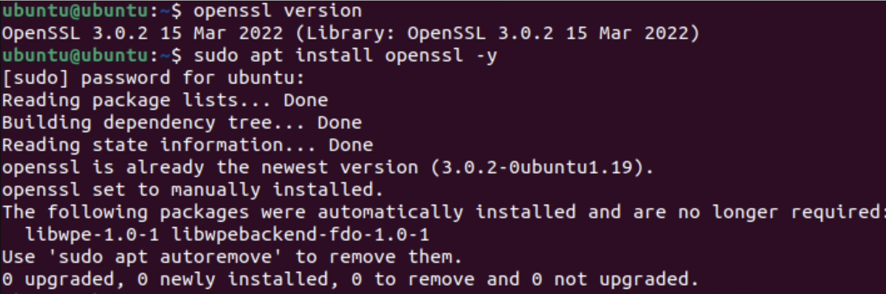
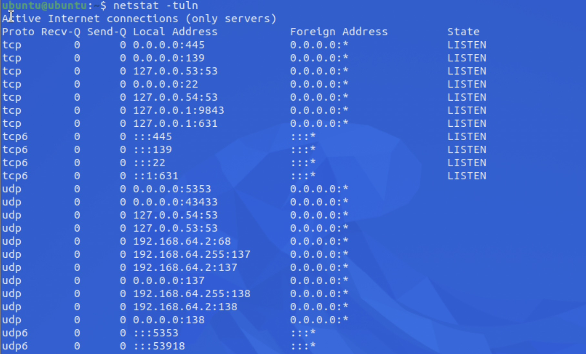
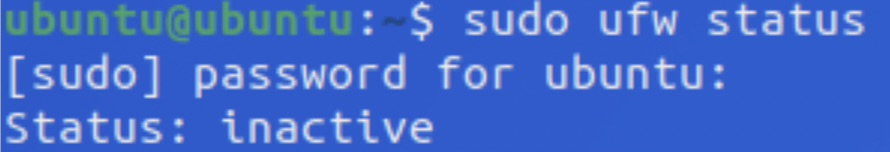
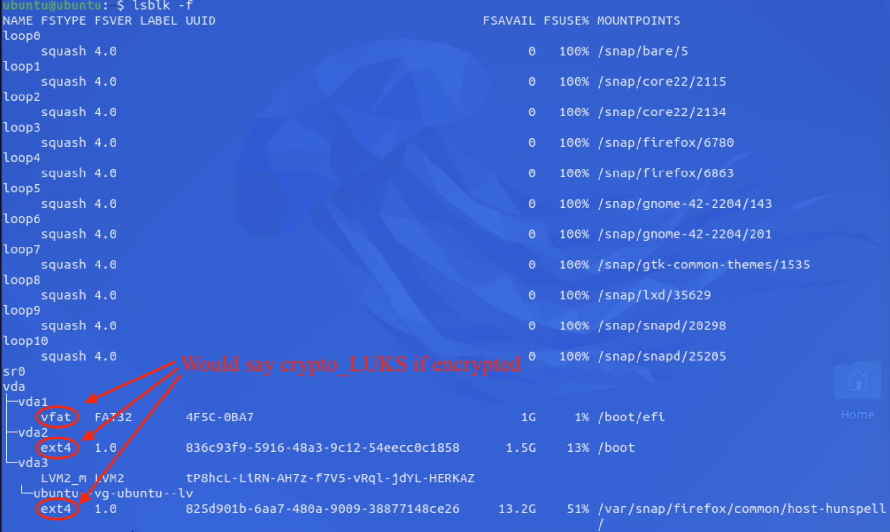
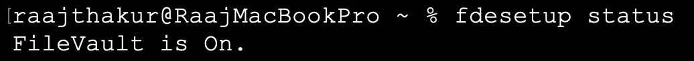

Determining Security Controls for Devices
Project Introduction
This project was focused on securing physical devices, specifically, patching vulnerabilities, recognizing examples of phishing, and other similar skills. Hackers and other malicious actors are constantly trying to break into devices, therefore knowing how to secure a device is vital for both personal devices and in commercial settings.
Planning and Design
The main objectives for this project were to identify types of attacks and recommend security controls for devices.
Cybersecurity Basics
The main purpose of cybersecurity can be represented by the CIA triad:
- Confidentiality: keeping information secret from malicious actors
- Integrity: keeping information trustworthy, uncorrupted, accurate, and ensuring it hasn't been tampered with
- Availability: making sure that information and systems are available when needed
Checking Ubuntu in UTM
To ensure that Ubuntu is secure, it is vital to be on the latest release. To check the version, the command uname -a can be used, and should output an example similar to Linux ubuntu 5.15.0-87-generic #97-Ubuntu SMP Tue Oct 3 09:52:42 UTC 2023 aarch64 aarch64 aarch64 GNU/Linux. This output means that the system is running Ubuntu on a 64-bit ARM processor (makes sense since M1 is an ARM chip) with Linux Kernel Version 5.15 which was built on October 3, 2023.
Checking MacOS
A similar process can be applied to macOS, albeit, with a slightly different command. system_profiler SPSoftwareDataType can be used to output data such as the macOS version, kernel version, and the build number. On my M1 Pro MacBook Pro, it outputted
System Version: macOS 26.1 (25B5042k) Kernel Version: Darwin 25.1.0 Boot Volume: Macintosh HD Boot Mode: Normal Computer Name: Raaj's MacBook Pro User Name: Raaj Thakur (raajthakur) Secure Virtual Memory: Enabled System Integrity Protection: Enabled Time since boot: 2 days, 12 hours, 44 minutes
The main takeaways from these data is that the computer is running macOS 26.1 with Darwin 25.1.0 (Darwin is the kernel of Apple software (such as macOS, VisionOS, iOS, etc.)).
Common Device Vulnerabilities
Devices are very complex, and therefore have many different aspects that could be vulnerable if ignored. Common vulnerabilities include:
-
Outdated OS: Outdated operating systems almost always have vulnerabilities which can be exploited by malicious actors.
-
Weak Passwords: Weak passwords can easily be guessed, allowing malicious actors to access sensitive data such as financial information, medical records, and more.
-
Open Ports: Ports are "doors" that let data in and out of a computer. More open ports are more access points that malicious actors can exploit to access data on a computer. Therefore, only ports required for functionality should be open, and unused ports should be closed. Common ports include:
- Port 80 = HTTP (hyper text transfer protocol)
- Port 443 = HTTPS (secure hyper text transfer protocol)
- Port 22 = SSH (secure shell)
- Port 25 = SMTP (simple mail transfer protocol)
- Port 110 = POP3 (retrieve mail)
- Port 143 = IMAP (mail on server)
- Port 3389 = RDP (remote desktop protocol)
- Port 53 = DNS (domain name system)
- Port 67 = DHCP (dynamic host configuration protocol)
-
Unpatched Software: Unpatched software is similar to outdated operating systems, as older versions of software often have vulnerabilities which malicious actors can use to do bad things.
Vulnerability Tracking (CVE)
Vulnerabilities are in virtually every software, and it is essential that these vulnerabilities are discovered and patched before hackers can exploit them. They are tracked using CVE, a standardized system for identifying and naming known vulnerabilities. Each vulnerability is assigned a unique CVE ID.
Social Engineering Attacks
Humans are usually the weakest link of the security of a device. Millions of people are targeted every day by social engineering attacks, attacks by hackers that exploit human behavior to trick them into installing malware, giving away information, or allowing hackers to directly control a system.
Types of attacks include:
- Phishing: Broad attacks where malicious actors send mass emails, texts, or other similar things to trick users into clicking a fraudulent link.
- Spear Phishing: More targeted version of phishing that targets a specific group or organization.
- Pretexting: When an attacker invents a story or identity to trick a victim to sending them money, sharing sensitive information, or granting access to a device.
- Baiting: Offering a prize to trick a victim into doing something that installs malware or sharing sensitive information.
- Tailgating: A physical tactic where a malicious actor follows an authorized person into a secure location, giving them access to sensitive data.
Technical Development
Recognizing and Updating Outdated Software
In order to secure the VM, I checked the version of important softwares in Ubuntu, then either installed them if they weren't previously installed or updated them if they were outdated.
| Software | Status | What the Software Does |
|---|---|---|
| OpenSSL | Up to Date | Encrypts network traffic |
| Firefox | Up to Date | Web browser |
| LibreOffice | Outdated | Office software (text, spreadsheets, slideshows, etc.) |
| Python | Up to Date | Popular programming language that underpins many modern apps and programs |
| Apache HTTP Server | Not Installed | HTTP server; important for hosting websites |
| GIMP | Not Installed | Photo editing software |
| Java | Not Installed | Programming language that underpins many programs |
| OpenSSH | Up to Date | Package for the SSH protocol, important for direct communication between 2 devices |

Checking Open Ports
Open ports can be a vulnerability in a system and can easily be secured by closing them if the port is not necessary. The open ports can be checked on Linudx with netstat -tuln. netstat is a CLI tool that shows network connections, routing tables, and open ports, and the -tuln argument tells netstat to show TCP connections (t), UDP connections (u), only ports that are listening (l), and show port numbers instead of service names (n).

On my VM, ports 445, 139, 53, 22, 54, 9843, 631, 5353, 43433, 68, 137, 139, and 53918 were open.
Setting up the Firewall (UFW)
On Linux, a commonly used firewall is UFW (Uncomplicated Firewall). A firewall is akin to a security guard for a computer: it decides which ports should stay open and which should be locked. To use UFW, follow the following steps:
- Install it with
sudo apt update && sudo apt upgrade, thensudo apt install ufw -y - Check UFW's status with
sudo ufw status - If it returns
inactive, then enable it withsudo ufw enable. At this point, UFW should be enabled
 
Testing and Evaluation
Testing for Disk Encryption in Ubuntu and macOS
Disk encryption is a common method of securing devices. It makes data on the SSD/HDD unreadable by anything other than the computer that has the encryption key for the drive. Both Linux and macOS have their own encryption services: LUKS and FileVault, respectively.
Testing Encryption on Linux
lsblk -f can be run to see if the disk is encrypted in Ubuntu. If the output mentions drives formatted as ext4 or vfat, that means that LUKS is off, and if it returns the type of drive as crypto_LUKS, then the drive is encrypted. My system was not encrypted, indicated by the ext4 and vfat at the bottom of the output.

Testing Encryption on macOS
To check FileVault (disk encryption) status on macOS, run fdesetup status, which either returns "FileVault is On" or "FileVault is Off".

Without encryption, someone could physically access a device's data by removing the SSD/HDD and plugging it into their own computer (this can't be done on modern Macs since their SSDs are soldered to the board).
Reflection
This project taught me about the many types of vulnerabilities in computers, how to secure devices, different types of social engineering attacks, and more. Through completing this project, I learned how to use the CLI to secure devices on both Linux and macOS, and about how to work with many different elements such as ports, firewalls, encryption, and more. I learned a lot about the dangers of having outdated software, and about CVE. Overall, this project provided a thorough overview of how to determine security controls for devices.